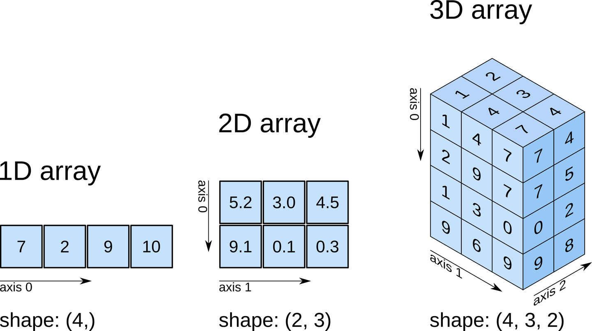
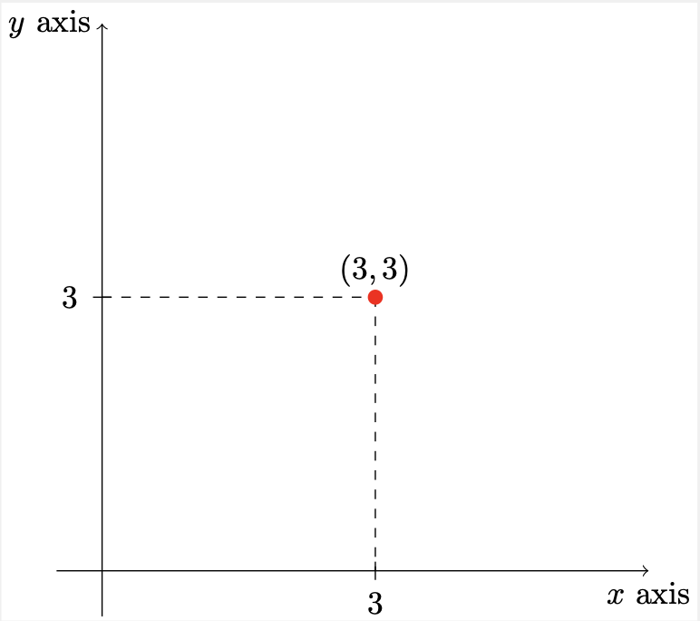

Introduction to NumPy
Efficient storage and manipulation of numerical arrays is fundamental to the process of doing actuarial data science. The Numerical Python (best known as NumPy) module facilitates storing and operating on dense data buffers. NumPy arrays are like Python lists (one of several of Python core types). However, NumPy arrays provide us with much more efficient storage and data operations.

Why is it important to learn how to use NumPy? Almost the entire data science ecosystem in Python makes use of NumPy arrays.

Array Basics
We can either create a NumPy array from a Python list/tuple or using NumPy built-in routines. Using the np.array() function, we can create a NumPy array from a Python list/tuple:
Note
Remark. NumPy arrays contain the same data type, in contrast to Python lists, which can store different data types.
When creating an array, if types do not match, NumPy tries to cast efficiently them to a single data type:
Note
How can we check what was the data type that NumPy assigned to array_2 and array_3?
Recall that we can display a list of all the attributes available for a given object (in this case, a NumPy array) by running the following snippet of code:
We can see that, for NumPy arrays, there is an attribute called dtype. Thus, we can run:
To get the data type that NumPy has assigned to the items of the array.
When creating an array, we can also explicitly assign the data type we would like to work with:
Remark. Note that array_4 only contains integer numbers. However, we assigned the “float32” data type to it. If we had created the array without specifying the data type, NumPy would have assigned the “int64” data type to it.
NumPy arrays can be multidimensional. For instance, let’s create a two-dimensional array of size \(4 \times 2\), composed of integers:
We can also create the same array, using list comprehensions:
Sometimes it is much easier to create arrays from scratch using NumPy built-in routines:
Remark. For more information about NumPy “array creation routines”, please visit the NumPy documentation on this topic.
TipGenerating Random Numbers
NumPy’s random module is incredibly versatile, offering functions to generate random numbers from various probability distributions. This is essential for simulations, statistical modeling, and machine learning tasks in actuarial science.
Here are some commonly used functions for generating random numbers:
- Uniform Distribution:
np.random.rand(d0, d1, ..., dn): Generates random floats in the half-open interval[0.0, 1.0).np.random.uniform(low=0.0, high=1.0, size=None): Generates random floats in a specified interval[low, high).
- Normal (Gaussian) Distribution:
np.random.randn(d0, d1, ..., dn): Generates samples from the “standard normal” distribution (mean 0, variance 1).np.random.normal(loc=0.0, scale=1.0, size=None): Generates samples from a normal distribution with a specified mean (loc) and standard deviation (scale).
- Integer Distribution:
np.random.randint(low, high=None, size=None, dtype=int): Generates random integers fromlow(inclusive) tohigh(exclusive).
- Other Distributions: NumPy also supports many other distributions vital for actuarial modeling, such as:
np.random.binomial(n, p, size=None): Samples from a binomial distribution.np.random.poisson(lam=1.0, size=None): Samples from a Poisson distribution.np.random.exponential(scale=1.0, size=None): Samples from an exponential distribution.- And many more, including
gamma,beta,chisquare,logistic, etc.
For a comprehensive list of random number generators, refer to the NumPy documentation on random sampling.
For simplicity, in most of the examples below, we will use the randint function to generate random integers in the range [0, 10].
Array Manipulations
We will now discuss some of the basic array manipulations:
Attributes: Fetching the size, shape, memory consumption and data types of arrays.
Indexing: Fetching or assigning individual array elements.
Slicing: Fetching or assigning smaller subarrays within larger arrays.
Reshaping: Modifying the shape of an array.
Joining and splitting: Merging multiple arrays into one and separating one array into many.
Array Attributes
Remark. Before we introduce NumPy arrays attributes, we are going to introduce NumPy random number generator, which offers the opportunity to generate “random numbers”.
Question. Can you interpret (in your own words) the snippet of code in the previous slide? That is, explain the contents of array_11, array_12 and array_13.
arrays are characterised by different attributes among which we can highlight the following:
ndim: number of dimensions (axes) of an array.shape: tuple containing the size of an array in each dimension.size: total number of elements in an array.dtype: gives the data type of the elements of an array.itemsize: provides the size (in bytes) of the elements of an array.
Let’s obtain some of the attributes of array_13 (an array we created previously):
Indexing
Array indexing is similar to what we have seen for lists. That is, we can access the \(i\)th value (counting from zero) of a NumPy array by specifying the desired index in square brackets:
For a multidimensional array, we can access its elements using comma-separated tuple of indices.
Remark. NumPy arrays are mutable. Therefore, we can modify values using the index notation:
Warning
Question. Recall that NumPy arrays contain the same data type, in contrast to Python lists, where different data types can be stored. Thus, what do you think will happen if we try to assign, for instance, a floating-point value to an integer array?
Answer.Yes, we should be careful! When trying to do this, the value “421.123” will get truncated to “421”.
Slicing
As for lists, we can also access subarrays (slices) using the following notation (assuming we want to fetch a slice from array x): x[start:stop:step] . If any of these three are unspecified, they take the following default values start = 0, stop = size and step = 1.
Remark. When using a negative value for step, the start and stop are swapped.
For multidimensional arrays, it works as for one-dimensional arrays, with multiple slices separated with comas. For example:
Subarray dimensions can even be reversed together:
Very often, we are interested in accessing single rows or columns of an array. We can do this by combining indexing and slicing, using an empty slice marked by a single colon (:) :
Remark. We can omit the empty slice : when accessing rows. That is, the following two lines of code are equivalent:
Remark. While doing actuarial data science, we may sometimes be interested in copying the data within an array or a subarray. We can do that by using the copy() method.
Question. Recall that array_12 looks as follows:
Thus, how will array_14 will look like (based on the snippet of code shown below)?
Reshaping
The reshape() method can be very useful when we are doing actuarial data science. As the name implies, reshaping is nothing more that rearranging the data of an array into a new shape. For instance, we know that array_11 is a one-dimensional array of size equal to twenty-one:
Which yields to the following two-dimensional array ndim = 2, size = 21 and shape = (3,7):
Concatenation and Splitting
To concatenate or join two (or more) arrays, we can use the following NumPy routines:
np.concatenatenp.vstackandnp.hstack
To exemplify how these NumPy routines work, let’s first create the following three one-dimensional arrays:
np.concatenate takes a tuple or list of arrays as its first argument:
We can also use np.concatenate for multidimensional arrays. To concatenate along the first axis we can do:
NoteRemark
A simple 2-dimensional Cartesian coordinate system has two axes, which represent orthogonal directions in a Cartesian space. Furthermore, we can describe the position of a point in Cartesian space by it’s position along each of the axes:

Figure. Points can be defined by their values along the axes. That is, if we have a point at position \((3,3)\), we are basically saying that it lies \(3\) units along the \(x\) axis and \(3\) units along the \(y\) axis.
Similarly, NumPy axes are the directions along the rows and columns:
axis 1 \(\rightarrow\)
axis 0 \(\downarrow\)
| column-0 | column-1 | column-2 | column-3 | |
| row-0 | ||||
| row-1 | ||||
| row-2 |
Thus, to concatenate along the first axis (or axis zero), we could also use the following code (which is equivalent to the code we previously saw):
On the other hand, to concatenate along the second axis:
Sometimes it is easier to use the np.vstack (vertical stack) and the np.hstack (horizontal stack) functions (especially when working with arrays of different dimensions):
Also note that, for np.vstack, arrays must have the same shape along all but the first axis. Conversely, for np.hstack, arrays must have the same shape along all but the second axis. Indeed, from the examples shown above we can confirm that this holds true by running the following snippet of code:
Splitting, which is the opposite of concatenating, can be performed with the following NumPy routines:
np.splitnp.hsplitandnp.vsplit
Remark. Note that, \(N\) split points lead to \(N + 1\) subarrays. Indeed, in the above example, we have \(N = 4\) split points (\(3, 5, 6, 10\)) which led to \(N+1=4+1=5\) subarrays arrays 22-26.
Question. In your opinion, what do you think the routines np.hsplit and np.vsplit do?
Answer. Unsurprisingly, np.hsplit and np.vsplit “split” an array horizontally and vertically, respectively.
Vectorised Operations
NumPy provides an easy and flexible interface to perform computations with arrays of data. In particular, NumPy universal functions (ufuncs) provide us with a fast way to do such computations by relying on vectorised operations.
In the following slides, we will motivate the existence of ufuncs, which are useful to perform repeated calculations on array elements in a much more efficient way, and then we will present the most common and useful ufuncs to perform arithmetic operations with NumPy arrays.
Let’s imagine that we have an array of values and that we would like to compute the square of each. One approach to do this, is using a loop, which might look like this:
Question. Can you explain, in your own words, what is the above snippet of code doing?
Answer. The above snippet of code is raising to the power of two all the elements of the input array.
Remark. The previous fragment of code is what in Python is called a function. A function is a device that groups a set of statements so they can be run more than once in a program. Functions allow to compute a result value based on specified parameters that serve as function inputs (in our example, the input is the array values).
Functions’ inputs may differ each time the code is run. For instance, let’s apply our function first to a “small” array:
Then, we apply our function to a “big” array and we measure the execution time of our function using the timeit module:
Now, we compare the results obtained with our function with the ones using a vectorised operation:
Lastly, we measure the execution time of the vectorised operation using the timeit module:
Thus, we have shown how vectorised operations, which are generally implemented through NumPy universal functions (ufuncs), tend to be more efficient.
Ufuncs are extremely flexible. For instance, we can also consider operations between two (or more) arrays:
Moreover, they are not limited to one-dimensional arrays:
As mentioned before, performing calculations using vectorised operations through ufuncs is nearly always more efficient that performing loops (especially when working with “big” arrays).
Remark. This means that, from now on, every time we see a loop in a Python script, we should consider if it can be replaced with a vectorised expression (to make it more efficient).
The table below, lists the arithmetic operators implemented in NumPy:
| Operator | Equivalent ufunc | Description |
|---|---|---|
| \(+\) | np.add |
Addition (e.g. \(4 + 2 = 6\)) |
| \(-\) | np.subtract |
Subtraction (e.g. \(23 - 10 = 13\)) |
| \(-\) | np.negative |
Unary negation (e.g.\(-7\)) |
| * | np.multiply |
Multiplication (e.g. \(7 \text{*} 3 = 21\)) |
| \(/\) | np.divide |
Division (e.g. \(7 / 4 = 1.75\)) |
| \(//\) | np.floor_divide |
Floor division (e.g. \(7//4 = 1\)) |
| ** | np.power |
Exponentiation (e.g. \(5 \text{**} 3 = 125\)) |
| \(\%\) | np.mod |
Modulus/remainder (e.g. \(22 \% 4 = 2)\) |
Let’s take a look to all these operations. First, let’s do it using the operator symbol:
Now, let’s perform the same computations but using the equivalent ufunc:
The absolute value is also useful for doing actuarial data science. The NumPy ufunc np.absolute allows us to compute the absolute value of an array:
An equivalent way of calculating the absolute value is using Python built-in absolute value abs():
As a matter of fact, the NumPy ufunc np.absolute is also available under the alias np.abs. That is, we can also write:
Trigonometric functions are also handy for actuarial data scientists. Luckily, NumPy provides us with a variety of ufuncs that support trigonometric functions. Let’s take a look to some of these:
Exercise. Using the slides from Topic 1: Introduction to Python, create a snippet of code that makes a plot of both the \(sin(x)\) and \(cos(x)\) with \(x \in [-3\pi, 3\pi]\).
The fragment of code and the requested plot would look like this:
Exponentials and logarithms are also widely used in actuarial data science. NumPy provides us with ufuncs that support these mathematical functions:
There are many more ufuncs functions available in NumPy (e.g. hyperbolic trig functions, bitwise arithmetic, comparison operators, conversions from radians to degrees, rounding and remainders).
Remark. As actuaries, we may be interested in applying more “special” functions to our data. Thus, it may be the case that these functions are not implemented in the NumPy module. Therefore, it is just a matter of programming these functions ourselves or looking for modules that contain more specialised functions. For instance, the SciPy module provides mathematical functions that may be useful to do actuarial data science.
From NumPy to SciPy
SciPy provides specialised functions that may be useful to do actuarial data science.For example, the gamma function, which is defined as:
\[\begin{align*} \Gamma(z)=\int_0^{\infty} t^{z-1} e^{-t} \mathrm{~d} t, \quad \Re(z)>0, \end{align*}\]
appears in the probability density function (p.d.f.) of a random variable that is gamma-distributed. Indeed, for a random variable \(X \sim \Gamma(\alpha, \beta)\), its p.d.f. is given by:
\[\begin{align*} f_{X}(x ; \alpha, \beta)=\frac{x^{\alpha-1} e^{-\beta x} \beta^\alpha}{\Gamma(\alpha)} \quad \text{for} \quad x>0 \quad \alpha, \beta>0, \end{align*}\]
where \(\Gamma(\alpha)\) is the gamma function. Very often, the gamma distribution is used to model insurance claims and therefore we may need to know how to implement the gamma function in Python.
Another example is the beta function, which is defined as:
\[\begin{align*} \mathrm{B}\left(z_1, z_2\right)=\int_0^1 t^{z_1-1}(1-t)^{z_2-1} d t, \end{align*}\]
for complex number inputs \(z_{1}\), \(z_{2}\) such that \(\Re(z_{1})\), \(\Re(z_{2}) >0\). The beta function appears in the p.d.f. of a random variable that is beta-distributed. Indeed, for a random variable \(Z\sim Beta(\alpha,\beta)\), its p.d.f. is given by:
\[\begin{align*} f_{Z}(z ; \alpha, \beta)= \frac{1}{B(\alpha, \beta)}z^{\alpha-1}(1-z)^{\beta -1} \quad \text{for} \quad 0\leq z \leq 1 \quad \alpha, \beta>0. \end{align*}\]
Thus, we may also need to know how to implement the beta function in Python.
Remark. The beta function can be expressed in terms of the gamma function. Indeed, we can prove the following:
\[\begin{align*} \mathrm{B}\left(z_1, z_2\right) = \frac{\Gamma(z_{1})\Gamma(z_{2})}{\Gamma(z_{1}+z_{2})} \end{align*}\]
Therefore, we wouldn’t necessary need to know how to implement the beta function in Python if we already know how to implement the gamma function.
There is a wide variety of ufuncs available in both NumPy and SciPy.
Aggregations
When working with large amounts of data, one of the first steps in exploring it is to calculate summary statistics. Among these statistics we could highlight the mean and the standard deviation but there are others that are also useful to derive some conclusions from our data (e.g. median, minimum and maximum).
| Variable | Mean | Median | Standard Deviation | Minimum | Maximum |
|---|---|---|---|---|---|
| Policyholder Years | 1,092.20 | 81.53 | 5,661.16 | 0.01 | 127,687.27 |
| Claims | 51.87 | 5.00 | 201.71 | 0.00 | 3,338.00 |
| Payments | 257,008 | 27,404 | 1,017,049 | 0 | 18,245,026 |
| Average Claim Number (per Policyholder Year) | 0.069 | 0.051 | 0.086 | 0.000 | 1.667 |
| Average Payment (per Claim) | 5,206.05 | 4,375.00 | 4,524. 56 | 72.00 | 31,442. 00 |
Swedish Automobile Summary Statistics. Source: Hallin and Ingenbleek (1983). The Swedish automobile portfolio in 1977: A statistical study. Scandinavian Actuarial Journal 1983, 49–64.
NumPy provides a variety of aggregates that can be computed using methods of the array object as shown in the table below:
| Function Name | Description |
|---|---|
np.sum |
Compute sum of elements |
np.prod |
Compute product of elements |
np.mean |
Compute mean of elements |
np.std |
Compute standard deviation |
np.var |
Compute variance |
np.min |
Find minimum value |
np.max |
Find maximum value |
np.argmin |
Find index of minimum value |
np.argmax |
Find index of maximum value |
np.median |
Compute median of elements |
np.percentile |
Compute rank-based statistics of elements |
np.any |
Evaluate whether any elements are true |
np.all |
Evaluate whether all elements are true |
Remark. Most aggregates have a NaN-safe counterpart that computes the result while ignoring missing values. These are available from NumPy 1.8 onwards.
Remark. The min, max, sum and other NumPy aggregates, can be computed using methods of the array object:
Exercise. Create the array: array_34 = [2.0, 3.0, float("NaN"), 1.0, 4.0] and apply some of the aggregates introduced previously to it. Do they all work? Do you notice the difference of the NaN-safe Version of these functions?
Why NumPy over Python?
First, let’s consider the case in which we are interested in computing the sum of all values in an array. Python itself can do this using the built-in sum function, and NumPy provides a more efficient version of this function.
Remark. NumPy version of the operation is computed much more quickly:
Remark. It is important to highlight the fact that Python built-in sum function is not identical to NumPy version. For instance, NumPy version allows optional arguments that Python built-in sum function does not (and vice versa). Moreover, NumPy sum function is aware of multiple array dimensions. We will show some examples below.
Python also has built-in functions to calculate the minimum and the maximum: min and max and we can also compare with their NumPy counterparts:
Multidimensional Aggregates
What happens when we work with multidimensional arrays? A common type of operation is an aggregate along a row or column. For instance, let’s assume we have the following two-dimensional array:
By default, NumPy aggregates will return the aggregate over the entire array
Aggregation functions take an additional argument specifying the axis along which the aggregate is computed:
Remark. The axis keyword specifies the dimension of the array that will be collapsed, rather than the dimension that will be returned.
Example: Swedish Automobile Claims
NumPy aggregates are extremely useful for summarizing a set of values. As a simple example, let’s examine a classic Swedish dataset of third-party automobile insurance claims that occurred in \(1977\). Third-party claims involve payments to someone other than the policyholder and the insurance company, typically someone injured as a result of an automobile accident.
The outcome of interest is the sum of payments (the severity), in Swedish kroners.
| Name | Description |
|---|---|
| Kilometres | Kilometers traveled per year |
| 1 :< 1,000 | |
| 2: 1,000 − 15,000 | |
| 3 : 15,000 − 20,000 | |
| 4 : 20,000 − 25,000 | |
| 5 :> 25,000 | |
| Zone | Geographic zone |
| 1: Stockholm, Go ̈teborg, Malmo ̈ with surroundings | |
| 2: Other large cities with surroundings | |
| 3: Smaller cities with surroundings in southern Sweden | |
| 4: Rural areas in southern Sweden | |
| 5: Smaller cities with surroundings in northern Sweden | |
| 6: Rural areas in northern Sweden | |
| 7: Gotland | |
| Bonus | No claims bonus. |
| Equal to the number of years, plus one, since the last claim. | |
| Make | 1-8represent eight different common car models. |
| All other models are combined in class 9. | |
| Exposure | Amount of policyholder years |
| Claims | Number of claims |
| Payment | Total value of payments in Swedish kroner |
We will use the built-in functions to read the file and extract its information, however in practice we would use the Pandas module (we will discuss more about this module in the next lecture).
Now that we have this data array, we can compute a variety of summary statistics:
Note that in each case, the aggregation operation reduced the entire array to a single summarising value, which gives us information about the distribution of values. We may also wish to compute quantiles:
It is sometimes more useful to see a visual representation of the data. We can accomplish this using tools from the Matplotlib module (we will discuss more about this module in one of the upcoming lectures).
Question. What initial conclusions can we draw about payments from the previous analysis?
Exercise. Perform a similar analysis (to that performed for the payments) for the number of claims. What initial conclusions can you draw about the number of claims from your analysis?
To finally plot the histogram:
The distribution of the number of claims follows a similar shape as that of payments, being both skewed to the right. That is, most observations have a low number of claims. Indeed, the median is 5, despite the maximum value being 3,338 claims.
Broadcasting
In one of the previous parts, we introduced NumPy universal functions (ufuncs), which can be used to vectorise operations and thereby remove slow Python loops. Broadcasting is a set of rules for applying binary ufuncs (e.g. addition and subtraction) on arrays of different sizes and represents another way for vectorising operations.
First, let’s recall that for arrays of the same size, binary operations are performed on an element-by-element basis:
Question. But… What happens if we try to perform a binary operation like the previous one on arrays of different sizes?
Answer. Broadcasting allows us to do that.
For instance, we can add a scalar to an array:
In this example, we can think of this as an operation that stretches or duplicates the value 2 into the array [2, 2, 2, 2, 2], and adds the results.
This is also true for arrays of higher dimension. For example, now we are going to add a one-dimensional array to a two-dimensional array:
In the above example, the one-dimensional array array_36 is stretched, or broadcast, across the second dimension in order to match the shape of array_38.
We can also consider more complex examples:
Remark. NumPy np.newaxis method is very handy for adding dimensions to an array. For more information about it, please see NumPy’s Documentation.
As in the previous examples, we stretched or broadcasted one value to match the shape of the other; here we have stretched both array_39 and array_40 to match a common shape, and the result is a two-dimensional array.
The geometry of the examples previously presented is shown below:

Figure. Visualisation of NumPy broadcasting. The light boxes represent the broadcasted values.
Tip
Broadcasting works with some rules:
1. If two arrays have different number of dimensions, the shape with the one with the fewer dimensions is padded with ones on its leading (left) side.
2. If the shape of two arrays does not match in any dimension, the array with shape equal to one in that dimension is stretched to match the other shape.
3. If in any dimension the sizes disagree and neither is equal to one, an error is produced.
We will now look at some examples of these situations.
Example. Incompatible arrays:
The shapes of the above arrays are:
Note
What happens behind the scenes (BTS) of broadcasting? By Rule 1 we pad the shape of array_42 on the left with ones (as it has fewer dimensions). That is, the shape of array_42 is now (1,5) instead of (5,).
Then, by Rule 2 we stretch the first dimension of array_42 to match the first dimension of array_41. Hence, the shape of array_42 is now (5,5) instead of (1,5).
Lastly, we get to Rule 3 and we see that the final shapes do not match. Indeed, the shape of array_41 is still (5,2) (the original shape) whereas the shape of array_42 is (5,5).
Example. Adding a two-dimensional array to a one-dimensional array:
The shapes of the above arrays are:
Note
What happens behind the scenes (BTS) of broadcasting? By Rule 1 we pad the shape of array_44 on the left with ones (as it has fewer dimensions). That is, the shape of array_44 is now (1,5) instead of (5,).
Then, by Rule 2 we stretch the first dimension of array_44 to match the first dimension of array_43. Hence, the shape of array_44 is now (2,5) instead of (1,5).
Lastly, we get to Rule 3 and we see that the final shapes match. Indeed, the shape of array_43 is still (2,5) (the original shape) and the shape of array_44 is also (2,5).
Finally, the result of the operation array_43 + array_44 is:
Example. Both arrays need to be broadcasted:
The shapes of the above arrays are:
Note
What happens behind the scenes (BTS) of broadcasting? By Rule 1 we pad the shape of array_46 on the left with ones (as it has fewer dimensions). That is, the shape of array_46 is now (1,5) instead of (5,).
Then, by Rule 2 we stretch the first dimension of array_46 to match the first dimension of array_45. We also stretch the second dimension of array_45 to match the second dimension of array_46. Hence, the shape of array_45 is now (5,5) instead of (5,1).
Lastly, we get to Rule 3 and we see that the final shapes match. Indeed, the shape of array_45 is (5,5) (the original shape) and the shape of array_46 is (5,5).
Comparison, Masks, and Boolean Logic
We will now discuss the use of Boolean masks to examine and manipulate values within NumPy arrays.
Masking is useful when we want to extract, modify, count, or otherwise manipulate values in an array based in certain criteria. For instance, masking is useful for:
Counting all the values that are greater than another certain value
Removing anomalies (e.g. outliers that are above some threshold)
\(\ldots\)
Example: Counting Rainy Days in Lausanne
We will work with an example to better understand the usefullness of masking. Specifically, we will work with daily rainfall statistics. That is, a series of data representing the amount of precipitation, expressed in millimeters (mm) of water, each day for the year 2023 in Lausanne, Switzerland. Unlike the Swedish Automobile example, we will load the data using the Pandas module (again, we will discuss more about this module in the next lecture):
The array contains \(365\) values, giving daily rainfall in inches from January 1 to December 31, 2023.
Now, using tools from the Matplotlib module (we will discuss more about this module in one of the upcoming lectures, we produce a histogram of our data:
The above histogram gives us a general idea of what the data looks like: most of days in Lausanne saw near zero measured rainfall in 2023.
A histogram provides a good overview of the distribution of our data. However, it may not be as useful answering other questions such as the following:
How many “rainy days” (here, a “rainy day” is a day with rainfall precipitation greater than zero) were in the year?
What is the average precipitation on those “rainy days”?
How many days were with more than 12. 7mm of rain?
\(\ldots\)
We previously introduced ufuncs and we focused in particular on arithmetic operators. Indeed, we saw that using \(+\), \(−\), *, \(/\) and others on arrays leads to element-wise operations.
In NumPy, we can also use inequalities like < (less than) and > (greater than). These are also element-wise operations and the result of these operations is always and array with a Boolean data type.
We can also compare (element-wise) two arrays:
As for arithmetic operations, comparison operators are also implemented as ufuncs in NumPy:
| Operator | Equivalent ufunc |
|---|---|
== |
np.equal |
!= |
np.not_equal |
< |
np.less |
<= |
np.less_equal |
> |
np.greater |
>= |
np.greater_equal |
So far, we have only seen examples with one-dimensional arrays. Nevertheless, comparison operators work on arrays of any size and shape. For instance, let’s consider the following two-dimensional array:
Which is a two-dimensional array that looks as follows:
Now, for example, we can verify which of the entires of this array are greater than \(5\):
There are a number of useful operations we can do. For example, we can count the number of entries that are greater than \(5\):
Remark. Using np.sum, we can also count the number of entries that are greater than \(5\). This is possible because False entries are interpreted as zero and True are interpreted as one:
Question. What is the benefit of using np.sum?
Answer. The benefit of using np.sum is that, like with other NumPy aggregation functions, this summation can be done along rows or columns as well:
We can also check whether any or all the values of an array are True:
We can also use np.all and np.any along the axes:
Remark. It is important to remember that, as mentioned in previous slides, Python built-in functions: sum, any and all are not identical NumPy aggregation functions: np.sum, np.any and np.all. In fact, Python built-in functions have a different syntax and will generally fail or produce undesirable results when used on multidimensional arrays.
Question. So far we have seen how we can calculate, for example, the number of days with rainfall less than \(8\) mm. Similarly, we now know how to calculate the number of days with precipitation above \(2\) mm. What if we are interested in calculating the number of days with precipitation between \(2\) mm and \(8\) mm? We can accomplish that by using Python bitwise logic operators, &, |, ^ and ~.
For instance, we can address these sort of compound questions as follows:
After executing the previous snippet of code, we see that there are \(21\) days with rainfall between \(2\) mm and \(8\) mm.
Question. Can you think of another approach by which we can also calculate the number of days with precipitation between \(2\) mm and \(8\) mm?
Answer. If you remember your introductory logic courses, you may realise that we can compute the same result as follows:
As you can imagine, combining comparison operators with Boolean operators can lead to a wide variety of efficient logical operations. The table below shows bitwise Boolean operators and their equivalent ufuncs:
| Operator | Equivalent ufunc |
|---|---|
& |
np.bitwise_and |
| |
np.bitwise_or |
^ |
np.bitwise_xor |
~ |
np.bitwise_not |
By combining masking with aggregations, we can now answer other types of questions. For instance, using Lausanne’s rainfall data:
Boolean Arrays as Masks
We have only discussed how to compute aggregates directly on Boolean arrays. Nevertheless, we can also use Boolean arrays as masks to select particular subsets of data.
As we saw previously, we can easily calculate a Boolean array that shows the entries that meet an specific condition:
Now, we can use the previous Boolean array to select those values in the array that meet the specific condition. This is called a masking operation:
Indeed, the output of the above masking operation is a one-dimensional array containing all values that meet the specified condition (or in other words, all the values in positions at which the mask array is True).
We can verify if the above calculation is correct or not by running the snippet of code below:
Thus, we can answer questions such as:
Fancy Indexing
We know how to access and modify portions of arrays using simple indices. For example:
array_47[1]
array_47[:, :2]
array_47[array_47 > 5]
Fancy indexing is another type of indexing in which we pass arrays of indices instead of single scalars:
Now, imagine you want to access five different elements. Therefore, you could do something like:
Equivalently, we can pass a single list or array of indices to obtain the same result:
Remark. With fancy indexing, the shape of the result reflects the shape of the index arrays rather than the shape of the array being indexed.
Indeed, imagine now that we want to index the same values as before, but we want to get as a result a two-dimensional array:
Fancy indexing also works in multiple dimensions. For example, let’s consider the following array:
As for standard indexing, the first index refers to the row while the second index refers to the column. Thus, we can, for example, index as follows:
Remark. The pairing of indices in fancy indexing follows all the broadcasting rules that were mentioned above. That is, we can also, for example, index as follows:
Remark. Therefore, it is important to have in mind that, when using fancy indexing, the return value reflects the broadcasted shape of the indices, rather than the shape of the array being indexed.
Sorting Arrays
To conclude this lecture, we will look at how to sort (and also, partially sort) values in NumPy arrays.
We will start by looking at Python built-in sorting algorithms, and we will then take a look at the routines included in NumPy, which are optimised for NumPy arrays.
Python has built-in sort() and sorted() functions to work with lists (for more information about these specific functions please visit Python’s Documentation on Sorting Techniques):
To simply sort a list in ascending order we can run:
Note that, in this case, the list in-place (list_5) is not modified. However, if we execute the snippet of code below, the list will be modified:
Another difference between these two built-in functions in Python is that the sort() method is only defined for lists while the sorted() function accepts any iterable. For instance, we can sort a dictionary:
On the other hand, to return a sorted version of a NumPy array without modifying the input, we can use np.sort():
A related function is np.argsort(), which instead returns the indices of the sorted elements:
Using the axis argument, we can also sort the elements of a multidimensional array along specific rows or columns:
Now, if we want to sort each column of array_51:
Conversely, if we want to sort each row of array_51, we execute:
We need to keep in mind that in the previous two examples each row or column is treated as an independent array. Thus, any relationships between the row or column values will be lost.
Partial Sorts: Partitioning
We may be interested in finding the \(\mathcal{P}\) smallest values in an array. For example, if we are interested in finding the \(\mathcal{P}=5\) smallest values in array_50, then we could use the np.partition() function:
Note that, the first \(5\) elements of the output array correspond to the \(5\) smallest elements in array_50 and the rest are the remaining elements. Moreover, it is also important to notice that both partitions ((i) the \(5\) smallest elements in array_50 and (ii) the rest of the remaining elements) are returned in an arbitrary order.
The np.partition() function also works for multidimensional arrays:
Furthermore, we can also do it for each column:
While for each row we have: